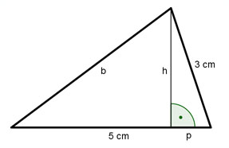
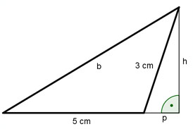

Aufgabe 50 In einem Dreieck ist eine Seite = 5 cm, eine zweite = 3 cm und die Fläche = 5 cm2. Wie groß ist die dritte Seite? Die Höhe h liegt innerhalb des Dreiecks:  c * h A = ------- | *2 2 2 * A = c * h :c 2 * A 2 * 5 cm2 h = ------- = ------------ = 2 cm c 5 cm Satz von Pythagoras für p: 32 = 22 + p2 |-4 p2 = 5 p = √5 p = 2,23 cm Satz von Pythagoras für b: b2 = 22 + (5 - 2,23)2 b2 = 4 + 7,7 b = √11,7 b = 3,4 cm Die Höhe h liegt außerhalb des Dreiecks:  Satz von Pythagoras für b: b2 = 22 + (5 + 2,23)2 b2 = 4 + 52,3 b = √56,3 b = 7,5 cm